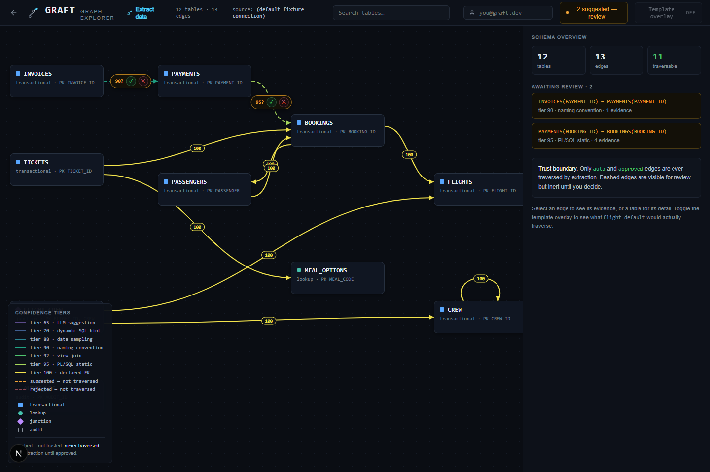
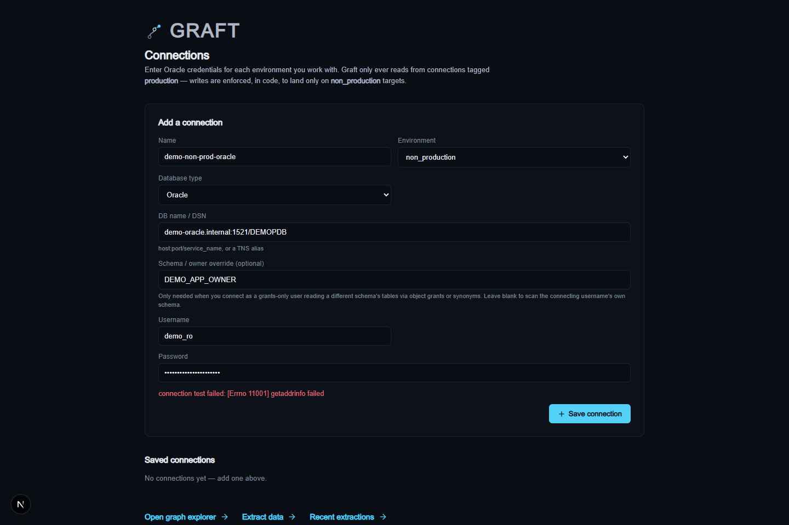
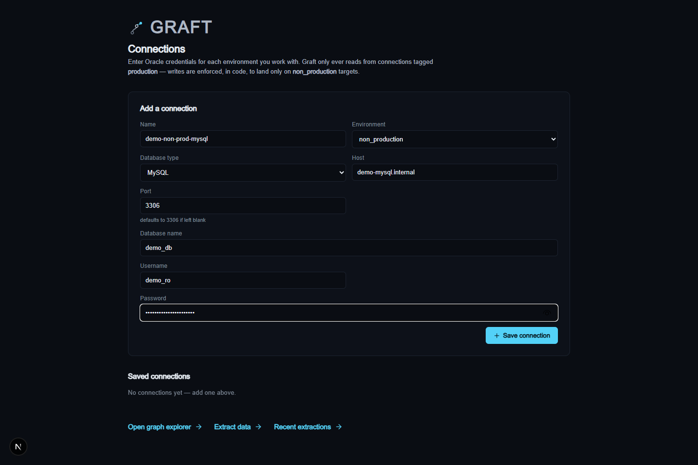
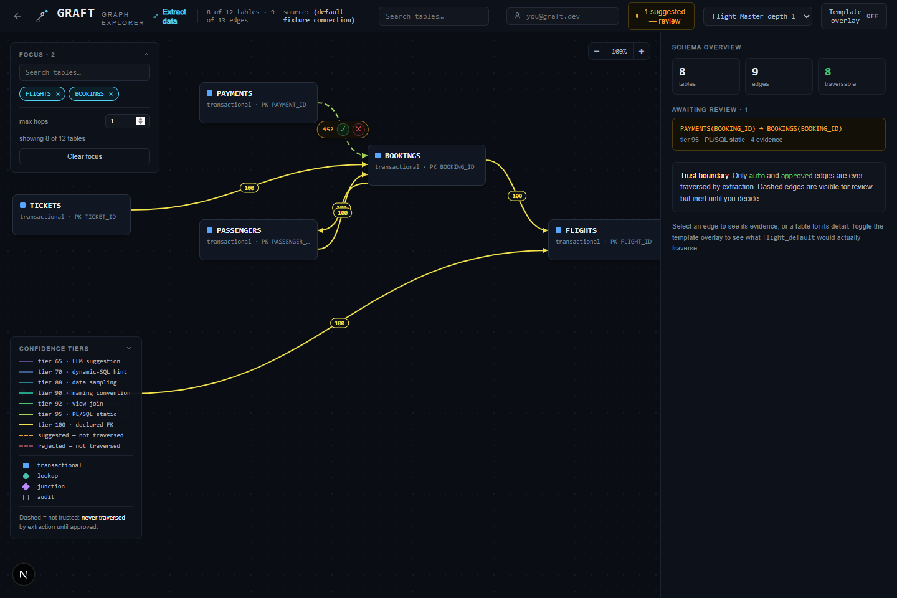
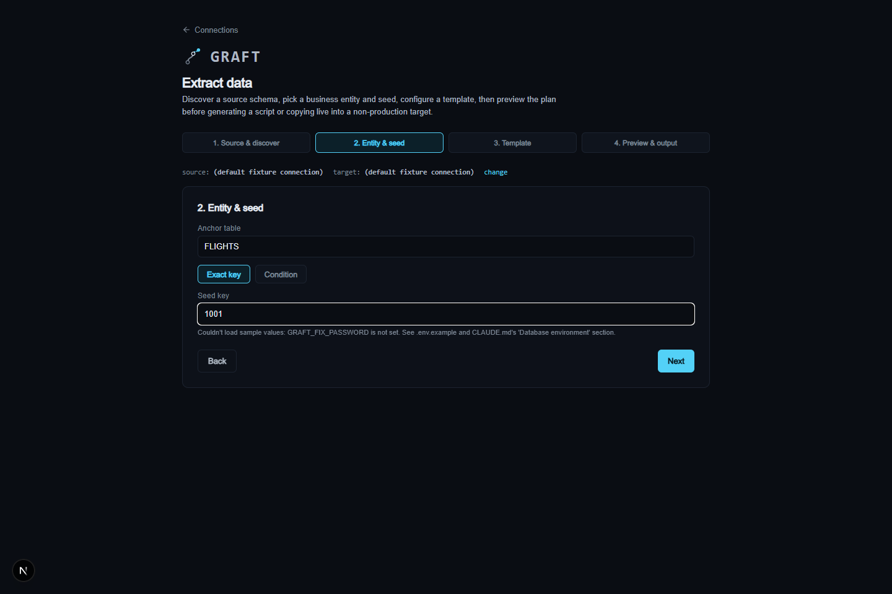
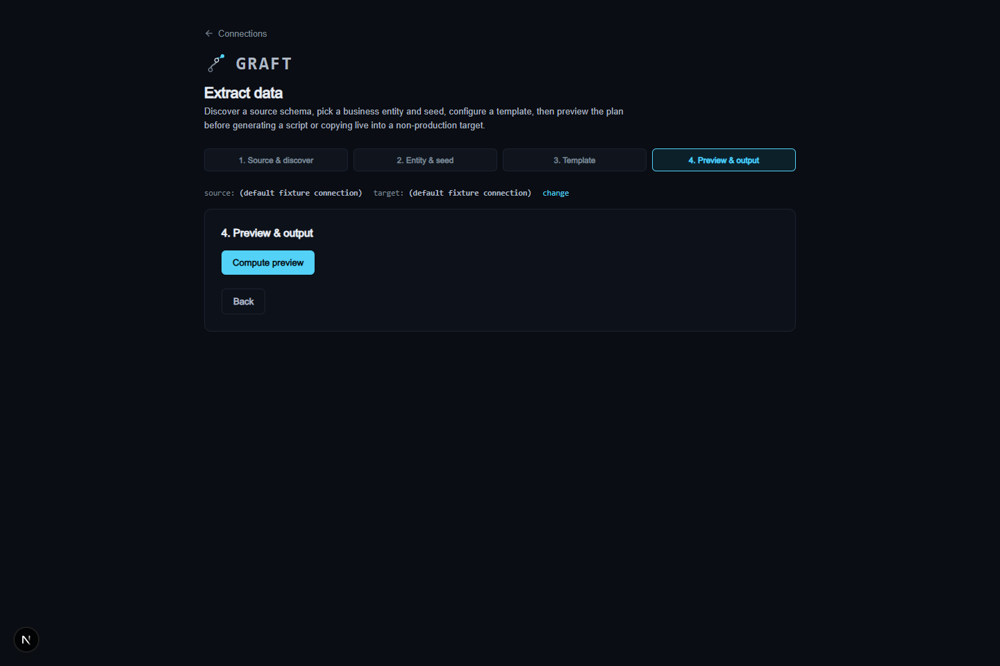

Back to portfolio
Oracle + MySQLdialect-aware discovery
Row-levelclosure across the graph
Boundedbudgets halt, never truncate
Guardedcode-level prod-write block
Relationship discovery & safe test data
Graft
An Oracle and MySQL relationship-discovery and safe test-data-provisioning tool. Graft maps real database relationships from live metadata, then generates a reviewable SQL script — or runs a guarded live copy — that pulls one complete business entity out of production and into a non-production environment, instead of testers manually and blindly copying data between environments.

Problem
Recreating one business entity for testing shouldn't require tribal knowledge of the schema.
Enterprise Oracle and MySQL databases often have thousands of interconnected tables. Production has complete, realistic data; staging, QA, and UAT environments drift stale over time. Manually figuring out which rows need to travel together to recreate one flight, order, or customer for testing is currently manual, error-prone, slow, and dependent on whoever happens to know the schema best.
What the tool solves
- Scans Oracle's or MySQL's data dictionary to discover declared foreign keys automatically, plus heuristic relationships surfaced for human review.
- Builds a dependency graph from approved relationships and computes the full row-level closure for a chosen seed entity.
- Enforces hard row/table/depth budgets that halt and report rather than silently truncating a result set a tester might trust as complete.
- Generates a reviewable, downloadable SQL script, or executes a guarded live copy into a connection explicitly tagged non-production.
- Requires a masking rule on every confirmed sensitive column before an extraction is allowed to proceed.
Case-study snapshot
Why this matters for enterprise QA and data provisioning.
Graft grew from a real production/non-production drift problem: proving which rows belong together to safely recreate one business entity, without a tester having to trust tribal schema knowledge or copy more than they should. The engine is deterministic end to end — discovery, closure, planning, and masking never depend on an LLM — with AI available only as a read-only, advisory layer for exploration. It has since been run against a real enterprise Oracle schema running to nearly two thousand tables, which directly shaped several of the features below.
Evidence-backed discovery, tested under fire
Every relationship edge carries evidence — a constraint name, source line, view name, or statistic. Discovered edges are now also cross-validated against the real scanned schema before they can become an approvable suggestion, closing a gap where a heuristic match could name a column that simply doesn't exist on the claimed table — a real failure mode caught and fixed against a production-scale schema, not a hypothetical.
Bounded, never-silent extraction — actually enforced
Row, table, and depth budgets halt and report when an extraction would exceed them, rather than silently truncating a result set that looks complete but isn't. The depth budget now correctly bounds optional child-table expansion while never limiting mandatory parent inclusion, so a tight budget can never quietly break referential integrity.
Focus mode for schemas at real scale
A live Oracle schema with close to two thousand tables makes an unscoped graph unusable to render or reason about. Selecting one or more tables now scopes the canvas, stats, and side panel to just those tables plus everything reachable upstream and downstream, with an optional hop limit for deeply interconnected schemas.
Correctable human review
An edge approved or rejected in error — often only discoverable once a real extraction hits it — can now be re-decided directly in the Graph Explorer instead of being a one-way decision.
Code-level prod-write guard
Graft refuses to write to a production-tagged connection in code, independent of what the database grants would technically allow — a guard, not just a convention.
Deterministic first
No LLM anywhere in discovery, closure, planning, or masking. AI is advisory-only, available through an MCP server for read-only exploration, never in the execution path.
Feature depth
A focused relationship-discovery and extraction workbench.
Dialect-aware engine
A dialect abstraction lets the same engine connect to, discover, and extract from either Oracle or MySQL. Scanning, closure, masking, and ETL are all dialect-aware under the hood, and the Connections screen adapts its form per database type — separate host/port/database fields for MySQL, DSN/TNS for Oracle.
Automated + heuristic discovery
Declared foreign keys are trusted immediately. Heuristic relationships — name similarity, view joins, PL/SQL static and dynamic analysis — are surfaced for human review and never auto-trusted.
Human-in-the-loop graph review
A Next.js Graph Explorer canvas where suggested edges are approved or rejected before they become traversable, and a past decision can be reset and re-made. Approval itself is audited — who, when.
Row-level closure engine
Given a seed — an exact key or a WHERE-clause condition — Graft walks only declared-FK or human-approved edges to compute the exact set of rows that must travel together.
Insert/delete planning
Builds an insert and delete order for the target, handling foreign-key cycles with an explicit, reasoned resolution strategy per cycle.
Enforced PII masking
Scans for sensitive columns by name, comment, and live-data-sampling signals. A confirmed sensitive column with no masking rule blocks extraction outright.
Reviewable output
Produces either a downloadable SQL script for manual review, or a guarded live execute against a connection explicitly tagged non-production — never against production. Manifest and plan output now carry plain-language explanations alongside the raw data.
Row lineage tracing
"Why is this row here?" traces any row in a computed manifest back through the exact chain of relationships that pulled it into the extraction, back to the seed.
Advisory MCP server
Exposes the same discovery, closure, and planning primitives read-only to AI coding agents for "explain why this row is included" style questions — never write access.
Canvas & connection polish
Zoom controls (25%-200%) and a collapsible legend keep the Graph Explorer usable on dense schemas. An Oracle connection can also specify a schema/owner override, for the common case of connecting as a grants-only user rather than the schema owner.
Product view
From connection to a reviewable extraction plan.
Screens from a locally-running instance, seeded entirely from Graft's own synthetic fixture schema — a small fictional airline dataset. No real connection strings, schemas, or records.

Connections — Oracle
Each saved connection is tagged production or non_production. An optional schema/owner override covers connecting as a grants-only user reading a different schema's tables.

Connections — MySQL
Switching database type re-shapes the form to MySQL's own connection fields — separate host, port, and database name — behind the same dialect-aware engine as Oracle.
Graph Explorer
Every discovered table and edge, tiered by confidence from a declared foreign key down to an LLM suggestion, with suggested (non-FK) edges held out for explicit approval.

Graph Explorer — focus mode
Scopes the canvas, stats, and side panel to selected tables plus everything reachable upstream and downstream, with an optional hop limit — built for schemas too large to render whole.

Extract wizard — entity & seed
Pick an anchor table and either an exact key or a condition — here, the fixture's own "Flight 1001" example — to define the business entity being extracted.

Preview & output
Computes the row-level manifest and insert/delete plan for review, then generates a downloadable SQL script or runs a guarded live copy into a non-production target.
Architecture
Five deterministic stages behind a thin API and Next.js UI.
Each stage is its own package in the engine, with the FastAPI layer serializing existing engine calls rather than owning new business logic, and an MCP server exposing the same primitives read-only to AI agents.
Scanner
Reads Oracle's or MySQL's data dictionary, through a shared dialect abstraction, into a versioned, drift-watermarked metadata snapshot.
Reads Oracle's or MySQL's data dictionary, through a shared dialect abstraction, into a versioned, drift-watermarked metadata snapshot.
->
Discovery
Declared FKs plus heuristic sources, merged into one evidence-backed, confidence-tiered graph.
Declared FKs plus heuristic sources, merged into one evidence-backed, confidence-tiered graph.
Graph review
Next.js canvas where a human approves or rejects suggested edges before they become traversable.
Next.js canvas where a human approves or rejects suggested edges before they become traversable.
->
Closure + planning
Walks only trusted edges under budgets to compute the row set and insert/delete order.
Walks only trusted edges under budgets to compute the row set and insert/delete order.
Masking + ETL
Sensitive columns must be classified and given a masking rule before a load plan is generated.
Sensitive columns must be classified and given a masking rule before a load plan is generated.
->
Script or guarded execute
Downloadable SQL, or a live copy enforced to land only on a non_production target.
Downloadable SQL, or a live copy enforced to land only on a non_production target.
Setup and use
- Add a source and target connection — Oracle or MySQL — each explicitly tagged production or non_production.
- Discover relationships and review the graph — approve, reject, or later re-decide suggested (non-FK) edges before they become traversable. On a large schema, use focus mode to scope the canvas to the tables that matter.
- Pick an anchor table and a seed — an exact key or a condition — to define the business entity.
- Configure budgets, lookup strategy, collision policy, and confirm masking rules for any sensitive columns.
- Compute the preview manifest and insert/delete plan, and trace any row's lineage back to the seed.
- Generate a reviewable SQL script, or execute a guarded live copy into a non_production target.
Tech stack
This page describes capability and architecture only. All screenshots are from Graft's own synthetic fixture schema — a small fictional airline dataset — never a real database, connection string, or dataset.